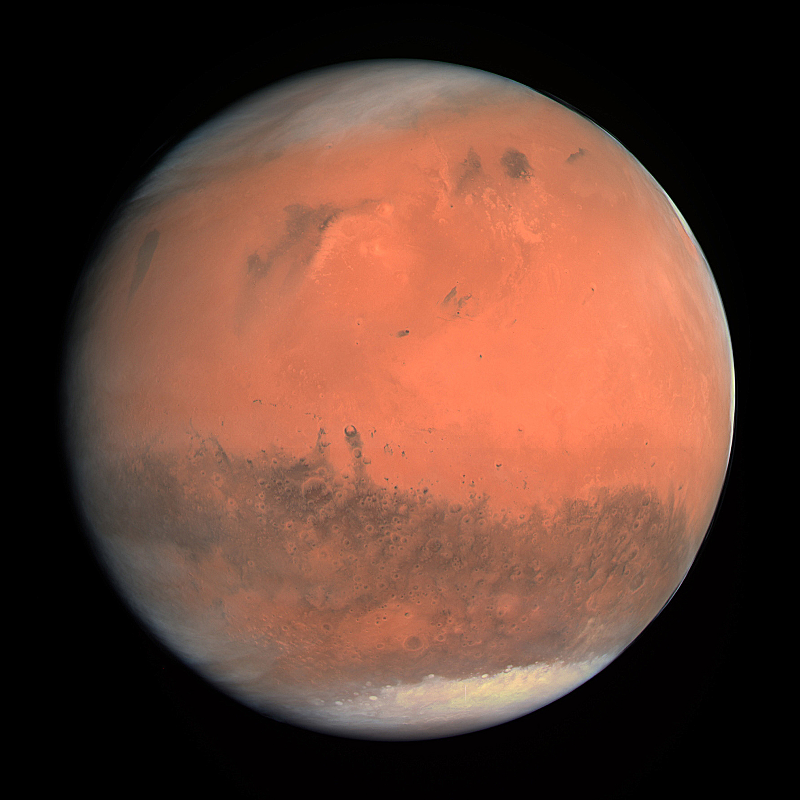
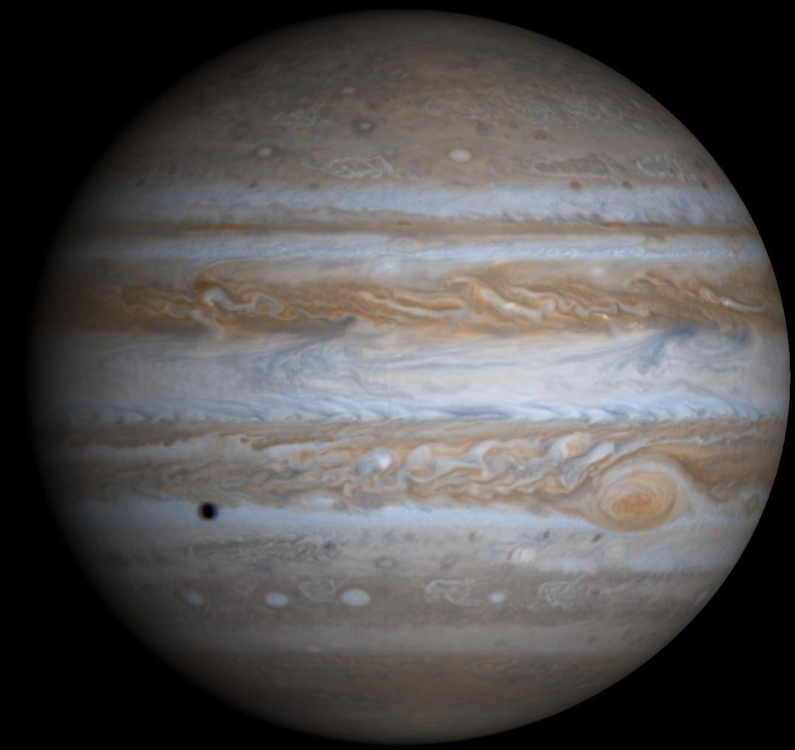
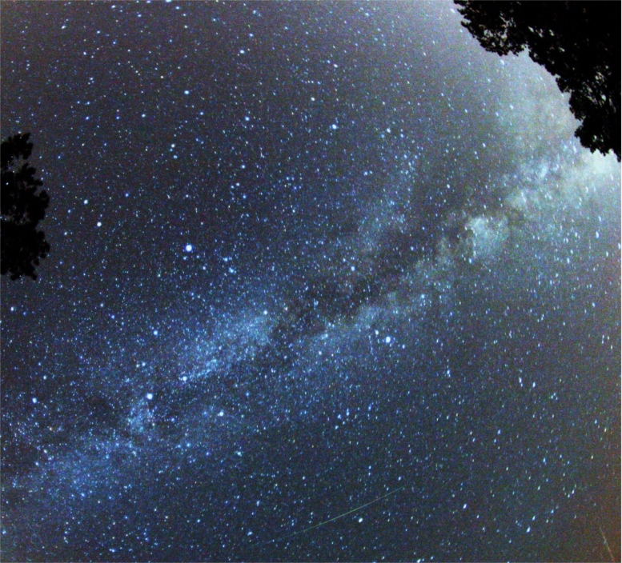
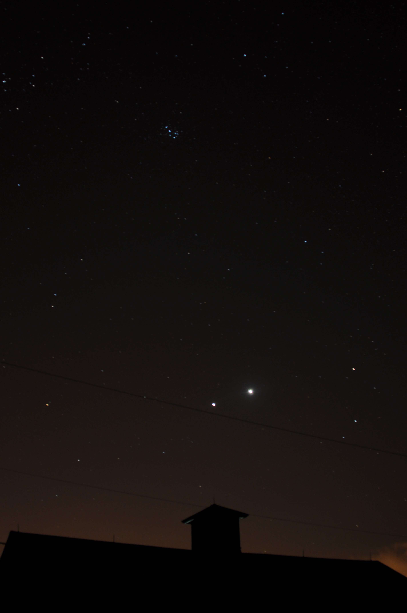
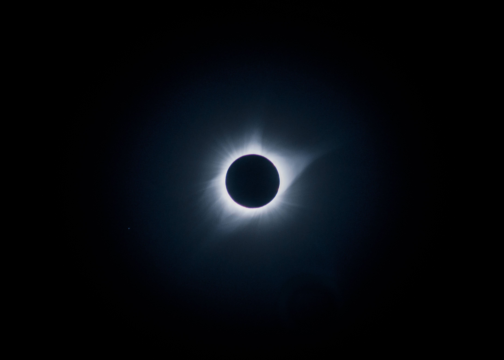

Dos grandes familias de planetas
Cercanos al Sol, superficies sólidas de roca y metal, alta densidad.
 Mercurio
Mercurio
 Venus
Venus
 Tierra
Tierra

MarteLejanos al Sol, inmensas atmósferas de hidrógeno y helio, anillos y lunas múltiples.

Júpiter Saturno
Saturno
 Urano
Urano
 Neptuno
Neptuno
Fenómenos astronómicos observables
 1. Satélite
1. Satélite
Fases de la Luna
El aspecto de la Luna cambia según su posición respecto al Sol y la Tierra, en un ciclo de ~29,5 días.

2. AtmósferaLluvias de Meteoros
"Estrellas fugaces" cuando la Tierra atraviesa el rastro de polvo de un cometa. Ej.: las Perseidas de agosto.

3. ÓrbitaConjunciones
Dos o más planetas se ven muy cercanos entre sí en el cielo nocturno, alineados desde nuestra perspectiva.

4. SombraEclipses
Solares (la Luna bloquea al Sol) o lunares (la sombra de la Tierra se proyecta cubriendo la Luna llena).
Cómo armar, colimar y enfocar
Extender y Asegurar: Deslizar las 3 barras colapsables hasta hacer tope y apretar sus perillas.
Colimar (Alinear Espejos): Calibrar el espejo primario y secundario con láser para máxima nitidez.
Alinear el Buscador: Ajustar los tornillos del buscador 9x50 usando un objeto diurno lejano.
Bajo Aumento Primero: Usar ocular de 25 mm en enfocador Crayford para un campo amplio al buscar.
Enfocar con Crayford: Girar las perillas de fricción Crayford suavemente. Aumenta luego con ocular de 10 mm.
Simulador de Enfocador Crayford